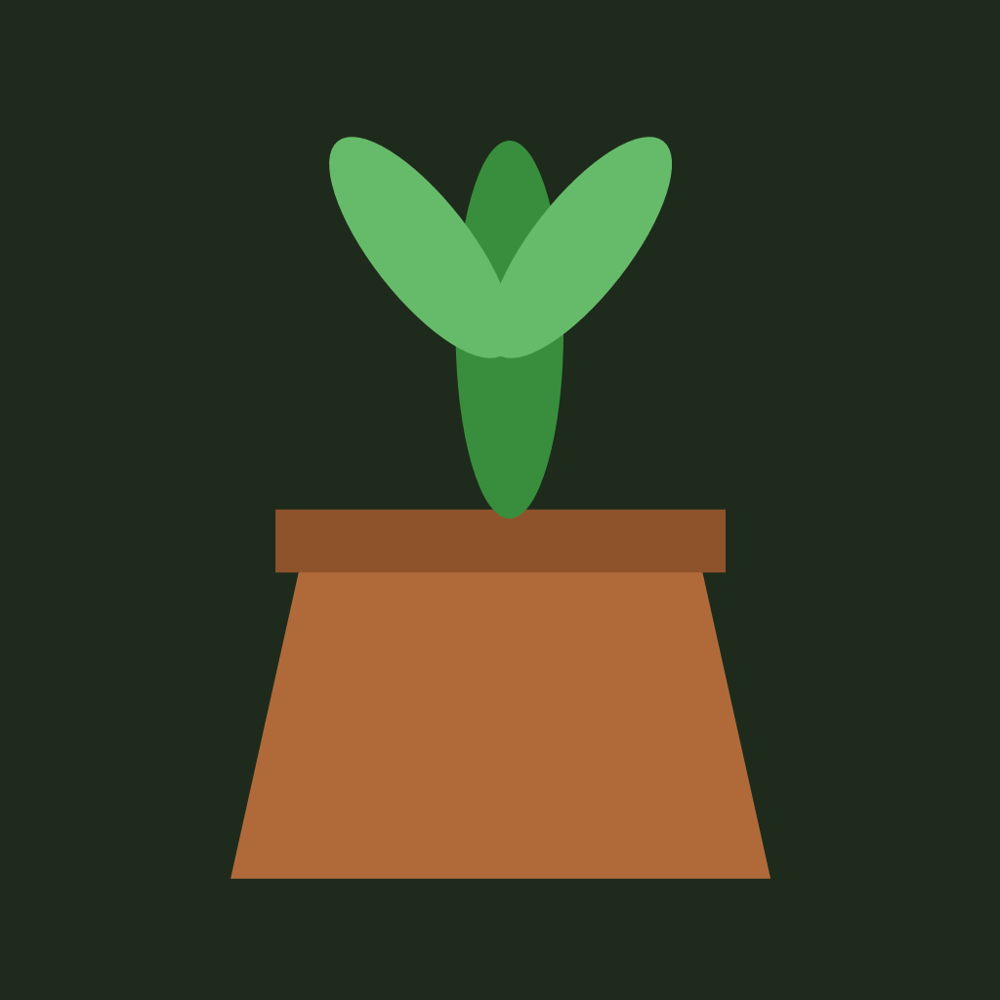
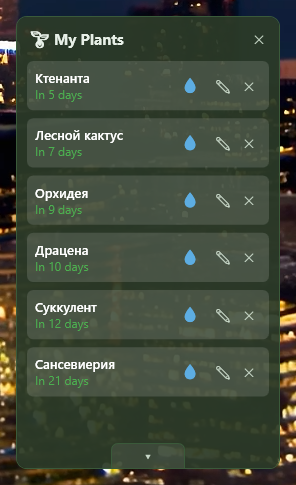
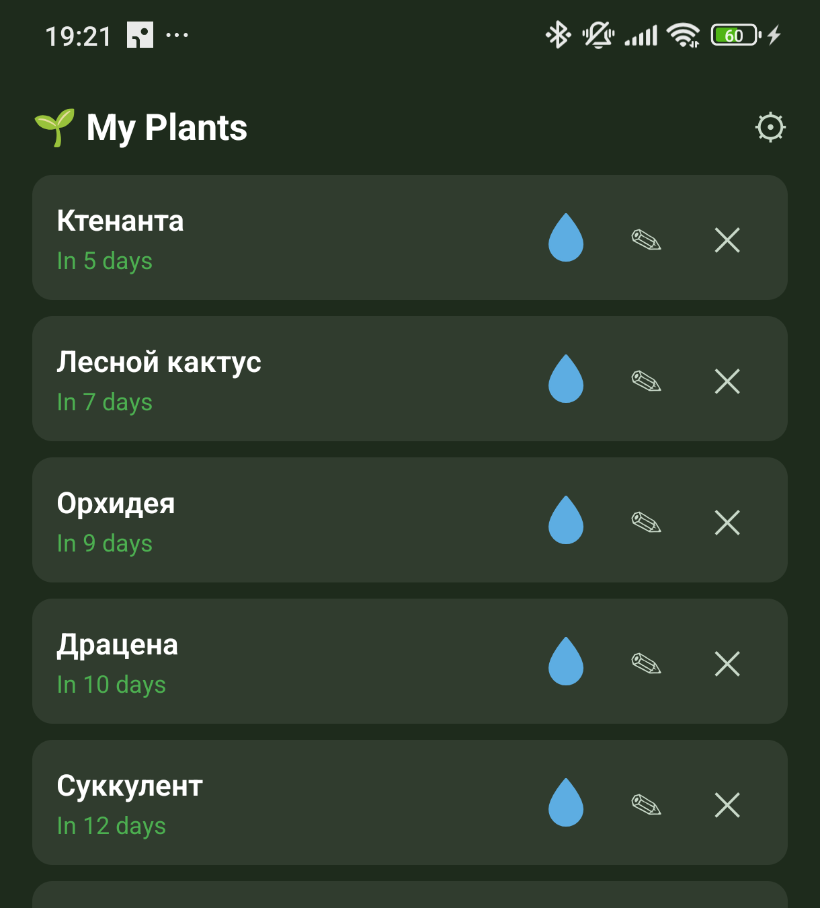

A Windows widget and Android app that remind you to water your plants — synced between your phone and desktop over the local network, no cloud, no accounts.


Shows how much "water" is left until the next watering, gradually emptying as the due date approaches — you can tell who needs it at a glance.
The "Water" button is always active. Water early, and the app just double-checks instead of blocking the button.
Set the last-watered date when adding a plant, and correct it later from the edit screen.
Your phone reminds you when it's time to water, even if the app is closed.
Your phone and desktop reconcile plant lists over the local network — two-way merge, no cloud involved.
Each plant gets its own watering schedule in days, instead of one schedule for everything.
A ready-to-run .exe, no .NET install required — on the releases page.
A ready-to-install .apk — same place, on the releases page.